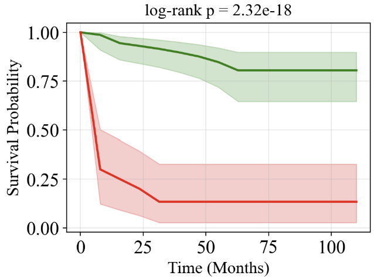
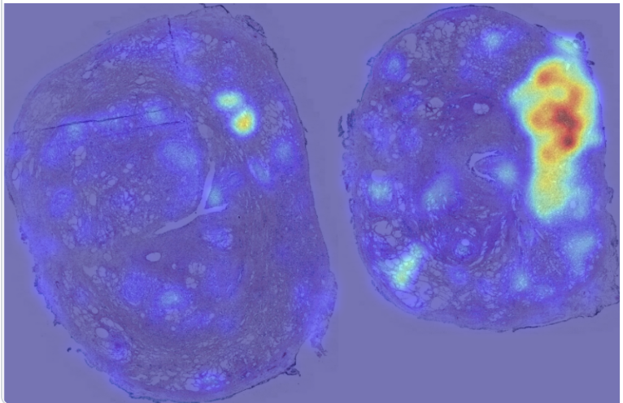

Comparing Strategies, and Making Predictions Inspectable
Numbers alone — AUROC, balanced accuracy, and F1 for classification; C-index for survival — tell you which fusion strategy wins. Visualization is what lets you check why — whether a model is looking at the right tissue, and whether its risk groups actually separate in a way that matches clinical intuition.
Comparing fusion strategies
Every (fusion, task) pair's out-of-fold metric from Inference side by side:
fig, (ax_cls, ax_surv) = plt.subplots(1, 2, figsize=(12, 4.5), width_ratios=[3, 1])
fusions, colors = ["early", "intermediate", "late"], ["#4FA3F0", "#7ec9a3", "#e0a03a"]
# classification: one bar group per metric, one bar per fusion strategy
cls = comparison_df[comparison_df["task"] == "classification"]
cls_metrics = ["auroc", "balanced_accuracy", "f1"]
x = np.arange(len(cls_metrics))
for i, (fusion, color) in enumerate(zip(fusions, colors)):
values = [cls.loc[(cls["fusion"] == fusion) & (cls["metric"] == m), "value"].item() for m in cls_metrics]
ax_cls.bar(x + i * 0.25, values, 0.25, label=fusion, color=color)
ax_cls.set_xticks(x + 0.25, ["AUROC", "Balanced Accuracy", "F1"])
ax_cls.set_title("Classification")
ax_cls.legend()
# survival: one bar per fusion strategy
surv = comparison_df[comparison_df["task"] == "survival"]
ax_surv.bar(surv["fusion"], surv["value"], color=colors)
ax_surv.set_title("Survival (C-index)")
for ax in (ax_cls, ax_surv):
ax.set_ylim(0.4, 1.0)
ax.axhline(0.5, color="gray", linestyle="--", linewidth=1) # random-chance baseline
ax.grid(axis="y", alpha=0.3)notebooks/05_inference_evaluation.ipynb — Step 5. Because every strategy shares its pooling method and head architecture, differences here are attributable to the fusion mechanism itself.
Kaplan-Meier risk stratification
A continuous risk score is far more useful once patients are split into discrete groups. Here, the highest-risk 20% of patients become the "high risk" group and everyone else is "low risk":
def add_tiny_noise(x: np.ndarray, seed: int = 42) -> np.ndarray:
"""Breaks ties -- otherwise many patients can land exactly on the threshold when
risk scores repeat."""
rng = np.random.default_rng(seed)
return x + 1e-8 * rng.standard_normal(size=x.shape)
def stratify_by_risk(patient_preds: pd.DataFrame, q: float = 0.2) -> pd.DataFrame:
"""Top-q fraction of patients by risk score become the high-risk group."""
out = patient_preds.copy()
risk = add_tiny_noise(out["mean_risk"].to_numpy())
threshold_value = np.quantile(risk, 1 - q)
out["risk_group"] = np.where(risk >= threshold_value, "high", "low")
return outnotebooks/05_inference_evaluation.ipynb — Risk stratification
For the best-performing survival model, the resulting high/low risk groups get their own survival curves — with confidence bands and a log-rank test for whether the two groups are statistically distinguishable:
def km_with_ci(times, events, timeline):
kmf = KaplanMeierFitter()
kmf.fit(times, events)
surv = kmf.survival_function_at_times(timeline).to_numpy()
ci = kmf.confidence_interval_.reindex(...).ffill().reindex(timeline)
return surv, ci.iloc[:, 0].to_numpy(), ci.iloc[:, 1].to_numpy()
surv_lo, lo_lo, lo_hi = km_with_ci(low["y_time"], low["y_event"], timeline)
surv_hi, hi_lo, hi_hi = km_with_ci(high["y_time"], high["y_event"], timeline)
p_value = logrank_test(low["y_time"], high["y_time"], low["y_event"], high["y_event"]).p_value
ax.plot(timeline, surv_lo, color="#4FA3F0", label="Low risk")
ax.fill_between(timeline, lo_lo, lo_hi, color="#4FA3F0", alpha=0.2)
ax.plot(timeline, surv_hi, color="#e05a5a", label="High risk")
ax.fill_between(timeline, hi_lo, hi_hi, color="#e05a5a", alpha=0.2)
ax.set_title(f"log-rank p = {p_value:.2e}")A small p-value here means the model's risk score isn't just ranking patients correctly on average (which C-index already measures) — the two groups it produces have visibly different, statistically distinguishable survival curves.

ABMIL attention — which patches drove the prediction?
The same attention weights ABMIL used to pool a WSI's patches into one vector double as an interpretability signal. Overlaying them back onto the slide thumbnail shows which regions the model actually weighted most heavily:
@torch.no_grad()
def extract_abmil_attention(model, wsi_features):
attn_scores = model.abmil.attention(wsi_features.to(DEVICE))
return torch.softmax(attn_scores, dim=0).squeeze(1).cpu().numpy()
def visualize_abmil_attention(patient_id, slide_id, attention, coords, patch_size=224):
slide = openslide.OpenSlide(str(wsi_path_for(patient_id, slide_id)))
thumb = slide.get_thumbnail((thumb_w, thumb_h))
heat = np.zeros((thumb.height, thumb.width), dtype=np.float32)
for (x, y), score in zip(coords, attention):
xt, yt = int(x * scale), int(y * scale)
heat[yt:yt + int(patch_size * scale), xt:xt + int(patch_size * scale)] = score
heat = gaussian_filter(heat, sigma=max(1, int(max(heat.shape) * 0.01)))
ax.imshow(thumb); ax.imshow(heat / heat.max(), cmap="jet", alpha=0.5)notebooks/05_inference_evaluation.ipynb — ABMIL attention
